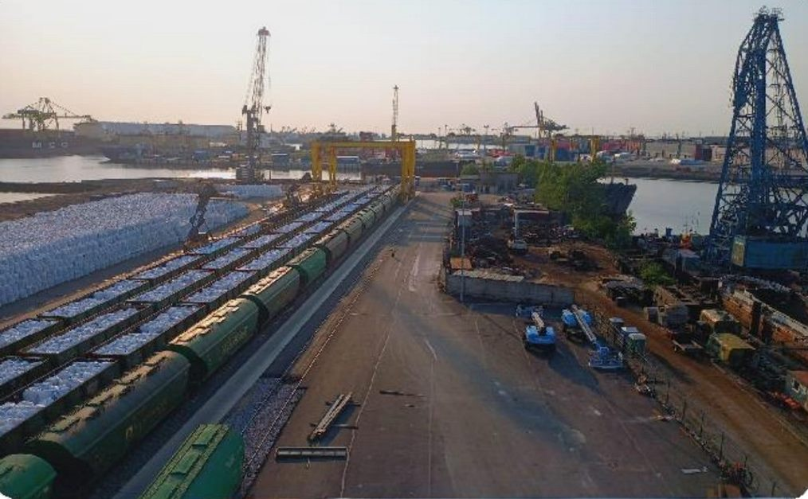
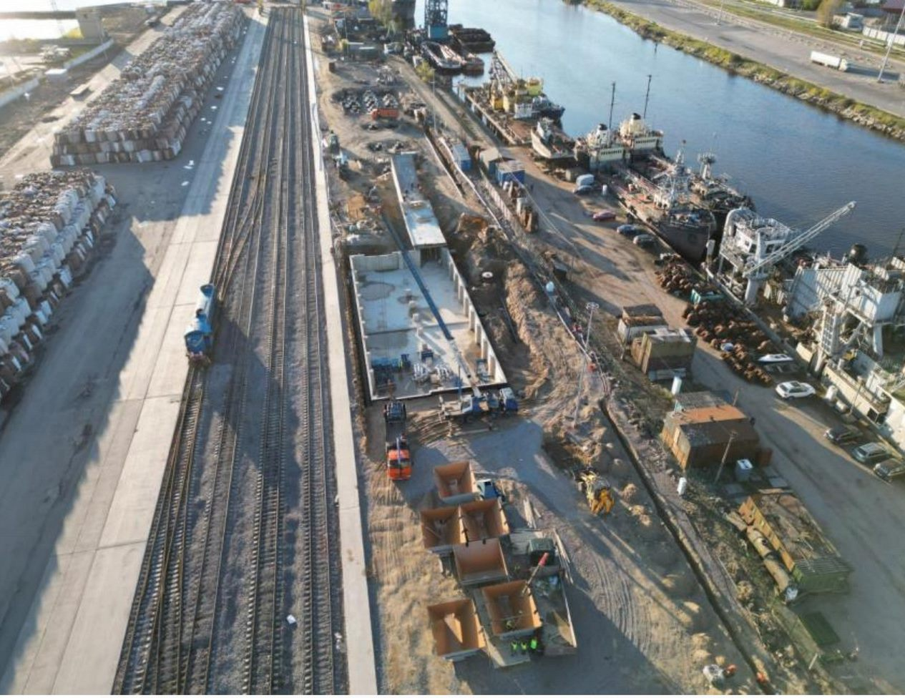
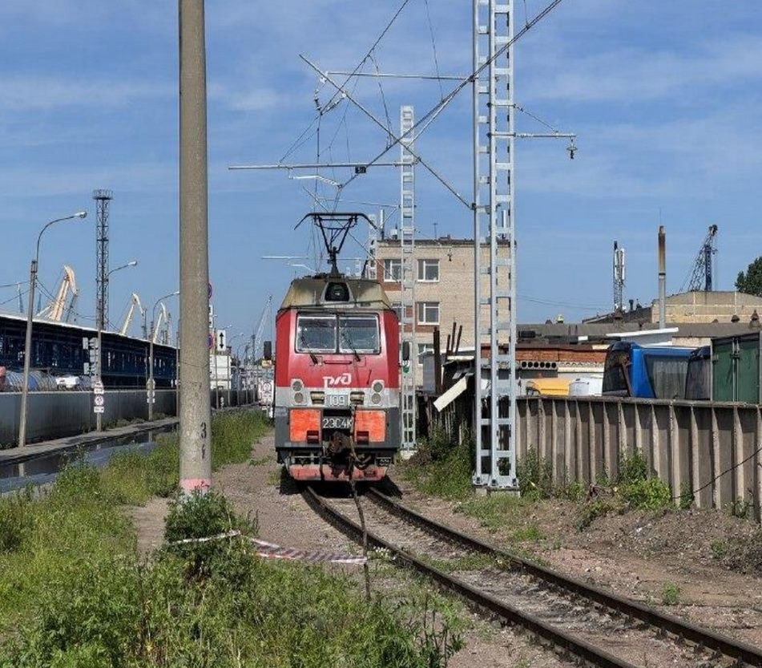
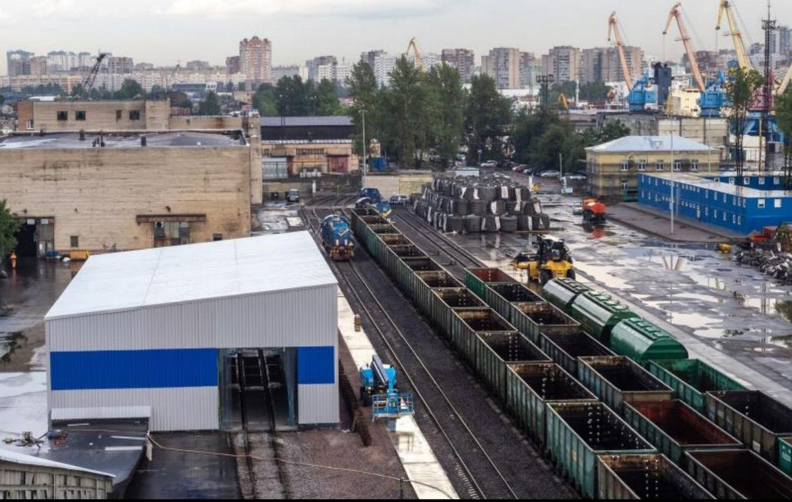
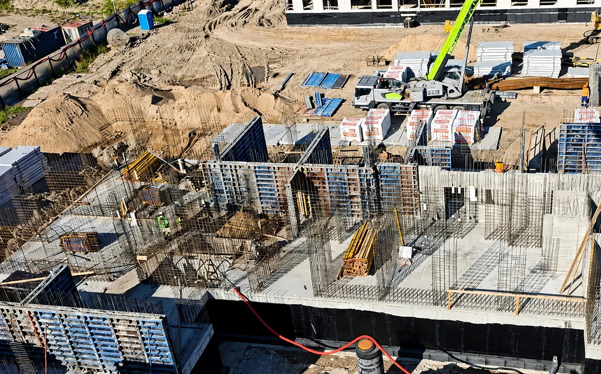
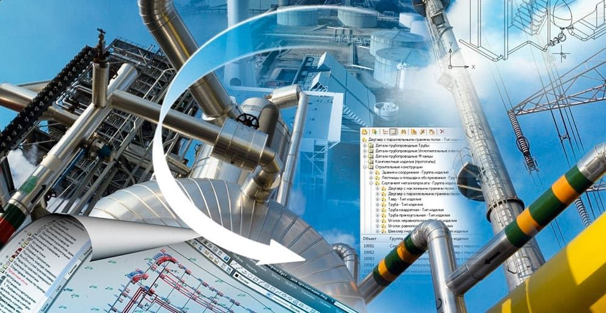

Реализованные проекты ООО «Стройсервис»: терминалы, ж/д пути, электрификация и монолитное строительство. Компания работает как генеральный подрядчик и служба технического заказчика.

Реконструкция базы ОАО «БСМЗ»
Санкт-Петербург · портовая территория
Строительство автодорог и ж/д путей более 3 км необщего пользования. Роль: генподрядчик и служба технического заказчика.
- Выполнено в октябре–декабре 2022
- Своевременно и полностью исполнены обязательства
- Заказчик начал перевалку грузов в срок
ГенподрядЖ/д путиАвтодороги

Модернизация терминала ОАО «БСМЗ»
Санкт-Петербург · 2022–2026
Комплекс перевалки минеральных удобрений с ж/д транспорта в мягкие контейнеры: пути, проезды, склады хранения.
- Строительство ЖД путей и проездов
- Конвейерные галереи и цеха затарки БИГ-Бэгов
- Ввод в эксплуатацию и сопровождение документации
ГенподрядПеревалка2022–2026

Электрификация ж/д путей ОАО «БСМЗ»
Санкт-Петербург · май–июнь 2025
Устройство стационарной системы зарядки и опробования тормозов вагонов (УЗОТ) и электрификация участка пути.
- Отправка поездов на электротяге во внешнюю сеть РЖД
- Рост грузооборота с 2 до 4,6 млн т в год
ЭлектрификацияУЗОТ2025

Реконструкция ж/д путей — Терминал «Фактор»
АО «Терминал «Фактор» · п. Усть-Луга
Реконструкция ж/д путей необщего пользования в порту. Роль: генеральный подрядчик и служба технического заказчика.
- Терминал 42,5 га, склады 20 600 м²
- Годовой грузооборот 750 000 ед.
- Проект в процессе развития с 2023
ГенподрядЖ/д путиПорт2022

ЖК «Лисино»
пос. Лисий Нос · Курортный район СПб
Малоэтажный кирпично-монолитный город-парк, 14 корпусов, комфорт-класс. Монолитный цикл, СМР, контроль качества.
- Армирование, опалубка, бетонирование стен и перекрытий
- Прогрев бетона в зимний период
- Исполнительная документация по площадке
Монолитный циклСМРЖилищное строительство

Инженерные сети и промобъекты
Санкт-Петербург и Ленинградская область
Строительство инженерных сетей и коммуникаций, модернизация и капремонт промышленных объектов.
- Полный цикл согласований и проектирования
- Сопровождение и ввод в эксплуатацию
Инженерные сетиРеконструкция